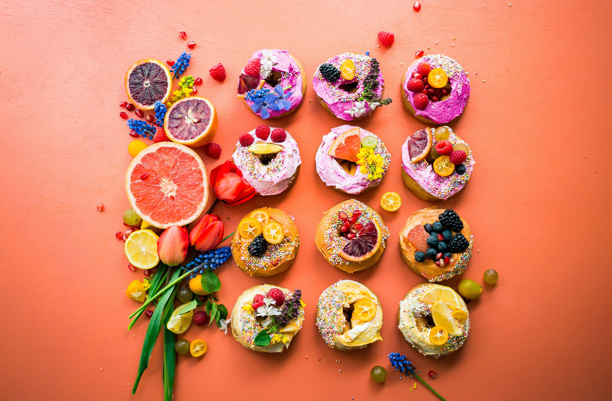

식사가 시작될 때부터 이미 피에스 몽테와 디저트 장식(bouts de table)이 식탁 위에 놓였고, 달콤한 앙트르메들(entremets de douceur)이 각 코스마다 이어져 나왔다. 데세르가 오늘날의 디저트의 의미를 갖게 된 것은 1850년경이었다.역사. 고대인들은 대부분 생과일이나 말린 과일, 유제품 또는 꿀로 식사를 마무리했다.
중세에 프랑스에서 주요 달콤한 요리들이 대개 고기 요리 사이에 서빙되었으며, 젤리, 콩포트, 플랑, 블랑망제, 투르트, 니욀(nieules 둥글고 납작한 과자), 푸아스(fouaces 왕관 모양의 달콤한 빵), 에쇼데(échaudés 반죽을 물에 데친 후 구운 빵의 일종), 와플과 다양한 갈레트 등으로 구성되었다.
순수한 의미의 디저트로는 이쉬(issue 향료를 넣은 포도주 한 잔과 작은 와플과자), 그리고 이어서 부트오르(boutehors 향신료와 과일 콩피로 만든 드라제)가 서빙되었다.
루루.